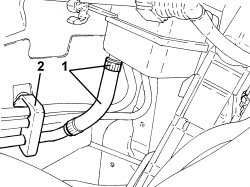
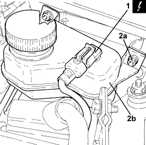

3330C34 BRAKE FLUID RESERVOIR - R + R AND WASH INSIDE - VERSIONS WITH RIGHT HAND DRIVE AND ABS
- Path
- Procedures > 33 BRAKES > 3330 HYDRAULIC BRAKING SYSTEM > 3330C BRAKE PUMP, RESERVOIR AND LOAD PROPORTIONING VALVE > 3330C34 BRAKE FLUID RESERVOIR - R + R AND WASH INSIDE - VERSIONS WITH RIGHT HAND DRIVE AND ABS
- Kind
- repair procedure (removal / refitting; the operation number is the code)
- Applies to
- engines: 2.2 JTS; all production periods
- Interactive page
- https://sloeber94.github.io/elrnDB-aBrrSpdr/en/#/946004012
Applies to: engines: 2.2 JTS; all production periods
 Removing
Removing
 Refitting
RefittingOp. 1016A10 SOUND-PROOFING COVER - R.R
Op. 3330C12 MASTER CYLINDER (PUMP) - R.R. FOR RIGHT HAND DRIVE VERSIONS
- Using a suitable syringe, draw off the brake/clutch fluid from the reservoir.
- Unscrew the engine coolant reservoir fixing nuts and move it aside.
1. Loosen the band and disconnect the supply pipe form the brake-clutch fluid reservoir to the clutch pump.
2. Open the clip retaining the pipes from the brake-clutch fluid reservoir to the master cylinder.

Applies to: engines: 2.2 JTS; all production periods
1. Disconnect the electrical connection for the brake-clutch fluid level switch.
Description | Connector | |
|---|---|---|
1 | Brake fluid level sensor (switch) |
2. Undo the nuts (2a) and remove the brake/clutch fluid reservoir assembly (2b).

Applies to: engines: 2.2 JTS; all production periods
Refitting
Removing- Place the brake-clutch fluid reservoir assembly back in its housing and secure it using the nuts.
- Connect the electrical connection for the brake-clutch fluid level switch.
- Connect the supply pipe from the brake-clutch fluid reservoir to the clutch pump and secure it using the band.
- Close the clip retaining the pipes from the brake-clutch fluid reservoir to the master cylinder.
- Place the engine coolant supply reservoir back in its housing and secure it using the nuts.
Op. 3330C12 MASTER CYLINDER (PUMP) - R.R. FOR RIGHT HAND DRIVE VERSIONS
Op. 1016A10 SOUND-PROOFING COVER - R.R
Op. 0010T64 BRAKE AND/OR CLUTCH FLUID CHECK LEVEL AND TOP UP AS NECESSARY